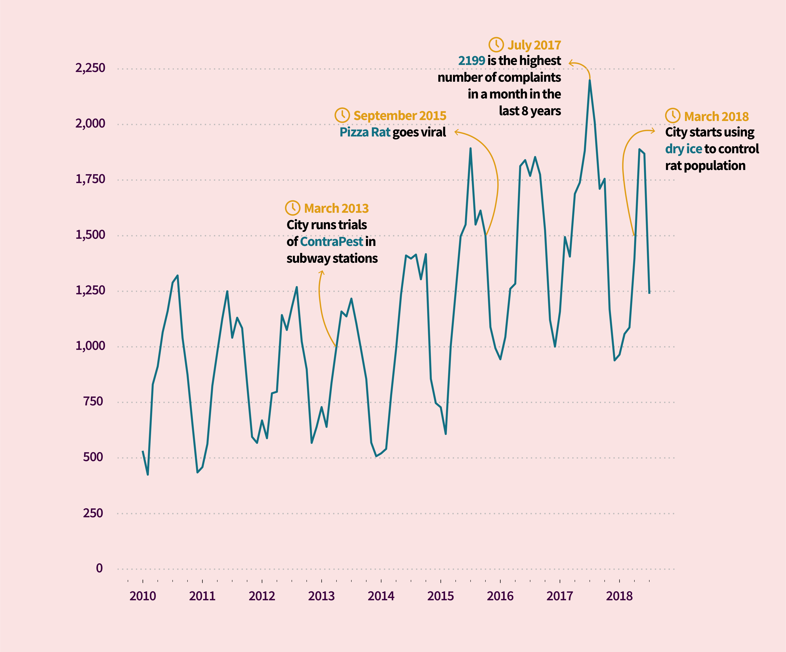
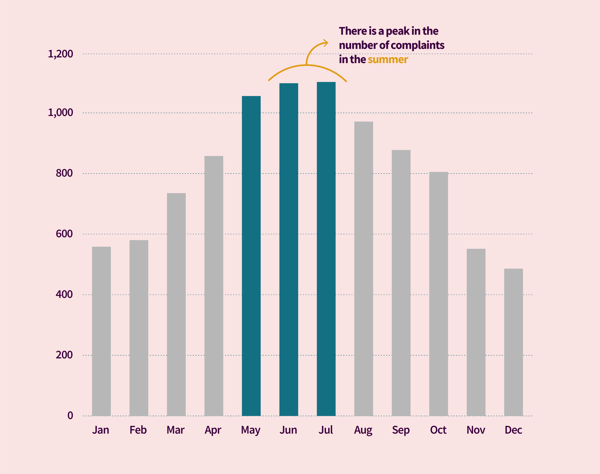
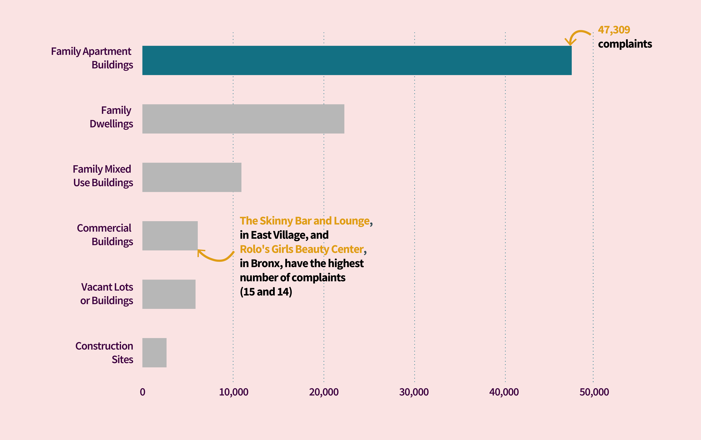

NEW YORK
New Yorkers Are Complaining More About Rats
BY Júlia Ledur
Published August 1, 2018
Every New Yorker knows about the city’s rat problem. And they are complaining more about it. Data from the NYC Open Data portal shows that the total number of 311 complaints about rodents has been increasing in the past five years, reaching 19,152 in 2017, 80% more than in 2012.
There has been a clear spike pattern in the number of complaints every summer since 2010, the first year with data available. Last July was the month with the most gripes in all eight years. This year, numbers have dropped, mostly because of the city’s effort to control the rat population using dry ice.
Rat sighting complaints in NYC per year
Since, 2017 has been the year with the highest number of complaints.
 SOURCE: NYC Open Data
Exterminators from the pest control division of the Health Department stuff rat burrows with dry "Rat Ice" in Columbus Park on Monday. (Linda Rosier)
In 2015, the third year in the rank of number of complaints, Pizza rat became New York City’s iconic rodent. It was spotted carrying a large slice of pizza down the dirty steps of a New York subway station and it quickly went viral.
More complaints in the summer
Looking closely at the number of gripes per month, from 2012 to 2018, it is clear that June and July mark the peak, with an average of more than a thousand complaints.
That happens because warmer weather means that more people are in parks leaving food waste for the rats, which procreate during the summer.
Caroline Bragdon, director of Neighborhood Interventions for Pest Control Services at the health department, said to the Wall Street Journal that the city has been making efforts to reduce litter in parks and open food waste, besides adopting dry ice as an extermination method.
Average number of complaints by month
There's a considerable spike in 311 calls in the months of June and July.

Manhattan is the borough with the highest number of complaints per population, followed by the Bronx and Brooklyn.
Considering total numbers in all neighborhoods, Bedford-Stuyvesant had the most complaints about rodents in 2017, in front of Harlem and Upper West Side in the list.
Where are people complaining the most?
Manhattan leads the rank, followed by the Bronx and Brooklyn.
Surprisingly, most complaints are registered in family apartment buildings, not on the streets. After that are family dwellings, mixed used buildings and commercial buildings. In the latter category, two addresses have an alarming number complaints: The Skinny Bar and Lounge (15), in the East Village, and Rolo’s Girls Beauty Center (14), in the Bronx.
Where are all these rats?
Most complaints are registeres in family apartment buildings.
 SOURCE: NYC Open Data